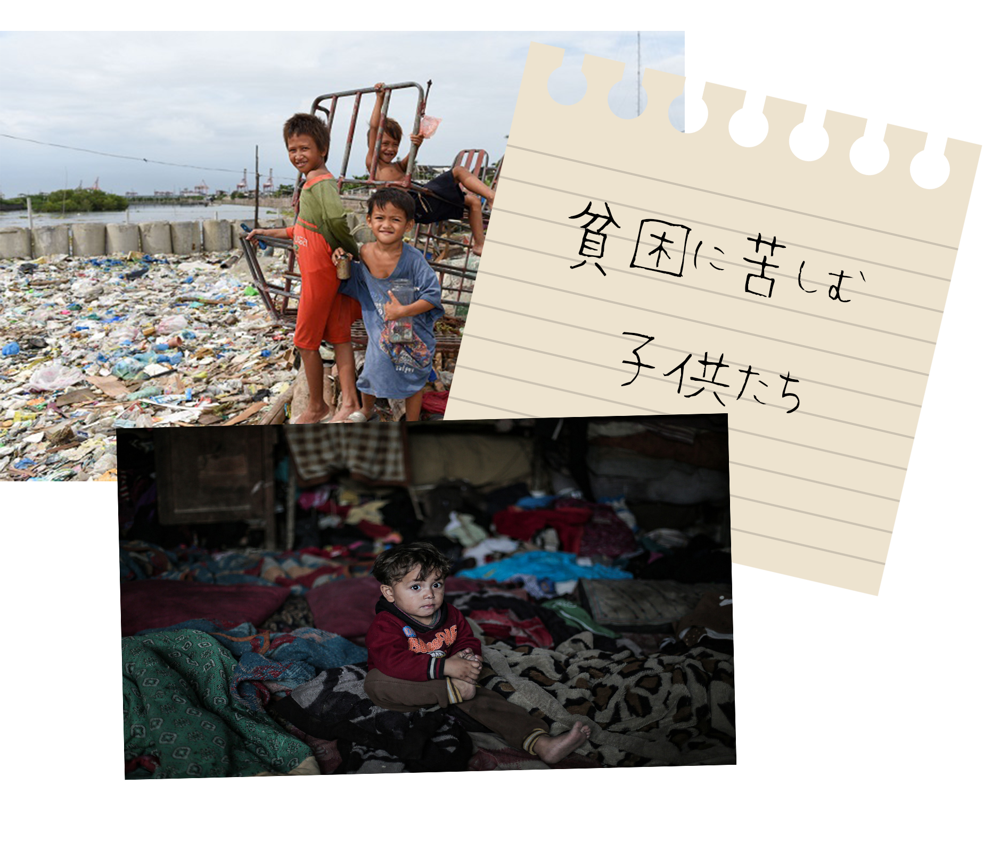

辛い思いをしながら生活をしている人を救うのが目標1「貧困をなくそう」の目指す未来といえます。 世界が急いで解決しなくてはいけない「極度の貧困」状態の人たちの多くは途上国経済発展や開発の水準が先進国に比べて低く、経済成長の途上にある国を指すで暮くらしています。先進国を中心とした国際的な支援が必要ですが，それだけでなく，貧しい人たちが自分たちで生活を向上させられるような「自立」へのサポートも大切なってきます.

貧困状態に置かれると、様々な問題が起こります。必要な生活費がないことで十分な食事をとることができなかったり、病気になっても適切な治療が受けられなかったりすることで、飢餓や短寿命といった状況に追い込まれてしまいます。 また、お金がないために不自由な生活を送っている人を減らします。食べ物が手に入らず命を落としてしまう子どもがいるのは事実としてあり、世界の技術や文化が発展しているとはいえ、お金がなく苦しんでいる人は数多くいます。 そして、家計を支えるため、過重労働や児童労働を強いられてしまうといった問題も発生します。そうなることで、子供たちが適切な教育が受けられなくなり、貧困の連鎖を生み出してしまいます。

フェアトレード（公正取引）
フェアトレードとは、発展途上国で作られている製品や原料などを正当な対価で継続的に購入することで、生産者や労働者の生活の改善と自立を目指す運動です。
従来型の途上国への一方的な支援や援助だけでは継続性にかけるという問題がありましたが、フェアトレードでは途上国で生産されたものを私たち消費者が正当な価格で購入することができるので、身近な国際協力の形といえます。

- 貧困状態に陥ることによって、飢餓や短寿命といった状況に追い込まれる
- 家計を支えるため、子供たちが過重労働や児童労働を強いられてしまう
- 10人に1人が貧困状態にある


家計を支えるために や を強いられている子どもがたくさんいる。
※穴埋め箇所をクリックすると正解表示